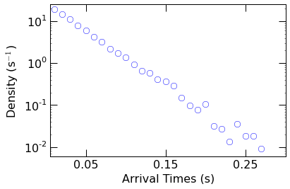
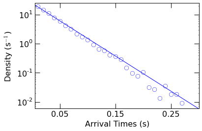

Estimate the capture rate of molecules partitioning into a nanopore.
:Created: 12/27/2015
:Author: Arvind Balijepalli <arvind.balijepalli@nist.gov>
:License: See LICENSE.TXT
:ChangeLog:
12/27/15 AB Initial version
import numpy as np
from mosaicscripts.analysis.kinetics import CaptureRate
Wrapper Function to Estimate the Capture Rate
The capture rate can be estimated directly by calling the
CaptureRate function in mosaicscripts.analysis.kinetics. The
function returns a list with two elements: the capture rate
(s:math:^{-1}), and the standard error of the capture rate
(s:math:^{-1}).
np.round(
CaptureRate(
"../data/eventMD-P28-bin.sqlite",
"select AbsEventStart from metadata where ProcessingStatus='normal' and ResTime > 0.02 order by AbsEventStart ASC"
),
decimals=1
)
Capture Rate Details
from scipy.optimize import curve_fit
import matplotlib.pyplot as plt
from mosaicscripts.analysis.kinetics import query1Col
import mosaicscripts.plots.mplformat as mplformat
from mosaic.utilities.fit_funcs import singleExponential
mplformat.update_rcParams()
Continue reading to dig deeper into how the capture rate is estimated
within the CaptureRate function.
The first step is to read in the start times for each event. This is
easily done with a query to the MOSAIC database as shown below. The
start times are stored in the AbsEventStart column. We limit the
events we use to estimate the capture rate to ones that were
successfully fit (ProcessingStatus=’normal’) and those whose
residence times (ResTime) in the pore are longer than 20
\(\mu\)s.
Finally, we sort the AbsEventStart to ensure the event start times
are in ascending order.
start_times=query1Col(
"../data/eventMD-P28-bin.sqlite",
"select AbsEventStart from metadata where ProcessingStatus='normal' and ResTime > 0.02 order by AbsEventStart ASC"
)
Next, we calculate the arrival times, i.e. the time between the start of
successive events. This is done with the Numpy diff function. Note
that AbsEventStart is stored in milliseconds within the database.
Here, we also convert the arrival times to seconds.
arrival_times=np.diff(start_times)/1000.
The partitioning of molecules into the pore is a stochastic process.
There are however a couple properties related to stochastic process that
we will leverage that makes the estimation of the capture rate more
robust. With randomly occuring events that have some mean rate, the
number of events scales linearly with time. Therefore, the distribution
of these events follows a single exponential form. We can easily test
this by calculating the probability density function (PDF) using the
Numpy histogram function. Note that the density=True
argument normalizes the histogram resulting in a PDF.
density,bins=np.histogram(arrival_times, bins=100, density=True)
Plot the resulting PDF with Matplotlib to verify the distribution.
Sure enough on a semilog scale, the resulting distribution appears
linear suggesting an exponential form.
plt.semilogy(
bins[:len(density)], density,
linestyle='None',
marker='o',
markersize=8,
markeredgecolor='blue',
markerfacecolor='None'
)
plt.xlim(0.005,0.3)
plt.ylim(0.006,25)
plt.xticks([0.05,0.15,0.25])
plt.yticks([1e-2,0.1,1,1e1])
plt.axes().set_xlabel("Arrival Times (s)")
plt.axes().set_ylabel("Density (s$^{-1}$)")
plt.show()

Next we fit the PDF to a single exponential function of the form
\(a\ e^{-t/\tau}\), where a is a scaling factor and \(\tau\) is
the mean time of the distribution (with a rate of 1/\(\tau\)).
This is accomplished with the curve_fit function within Scipy.
popt, pcov = curve_fit(singleExponential, bins[:len(density)], density, p0=[1, np.mean(arrival_times)])
We then visually check the fit, by superimposing the resulting fit
function over the PDF.
plt.semilogy(
bins[:len(density)], density,
linestyle='None',
marker='o',
markersize=8,
markeredgecolor='blue',
markerfacecolor='None'
)
plt.semilogy(
np.arange(0.001,0.4,0.02),
singleExponential(np.arange(0.001,0.4,0.02), *popt),
color='blue'
)
plt.xlim(0.005,0.3)
plt.ylim(0.006,25)
plt.xticks([0.05,0.15,0.25])
plt.yticks([1e-2,0.1,1,1e1])
plt.axes().set_xlabel("Arrival Times (s)")
plt.axes().set_ylabel("Density (s$^{-1}$)")
plt.show()

Finally, we can extract the capture rate (1/\(\tau\)) from the
optimal fit parameters.
np.round([1/popt[1]], decimals=1 )